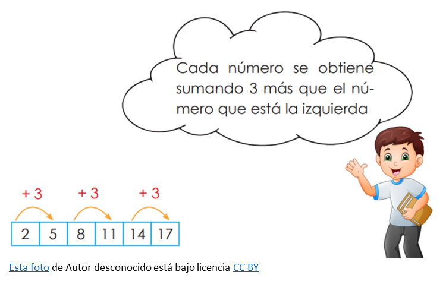
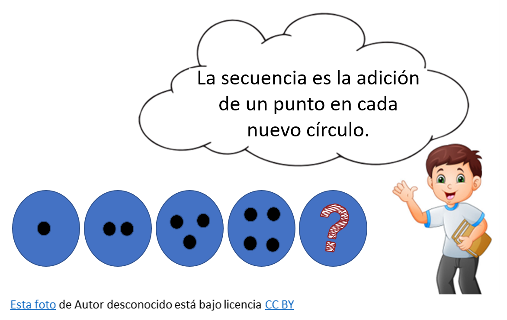

🤔 Habilidad de inducir
La habilidad de inducir se refiere a la capacidad de identificar patrones, tendencias o reglas generales a partir de una serie de datos o información. Tanto los patrones numéricos como los patrones de figuras pueden ser utilizados para desarrollar y ejercitar la habilidad de inducir.
En el ámbito numérico, la inducción nos permite detectar secuencias y relaciones matemáticas ocultas en conjuntos de números. Por ejemplo, al analizar una serie de números como 2, 5, 8, 11, 11, 14, 17 podríamos inducir la regla que los gobierna, que en este caso es una progresión aritmética con una diferencia constante de 3 entre cada término.

Asimismo, en el ámbito de los patrones de figuras, la inducción es clave para identificar formas y estructuras ocultas que pueden proporcionar información valiosa. Al observar una secuencia de figuras geométricas, como círculos, cuadrados o triángulos, podemos deducir las reglas subyacentes que generan la secuencia. Por ejemplo, si vemos una serie de círculos donde cada uno tiene un punto adicional, podríamos inducir que la regla que rige la secuencia es la adición de un punto en cada nuevo círculo.
